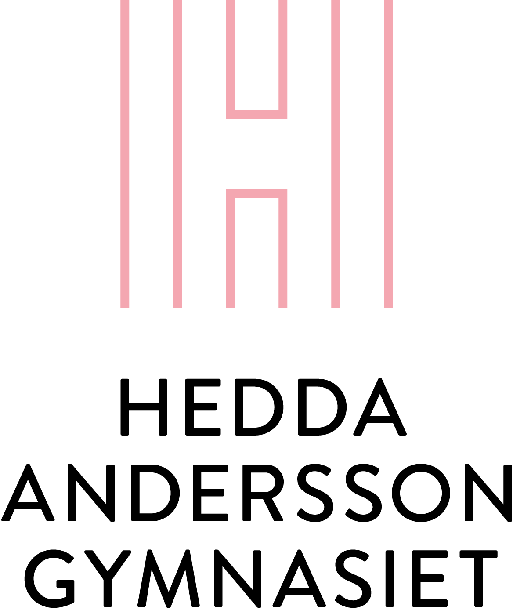

Efter text så är kanske bilder det mest centrala på webben. Vilken kanske
inte är så konstigt eftersom en bild säger mer än tusen ord. När
man vill lägga upp en bild på sin webbsida så är det viktigt att man vet
exakt var bilden ligger och man skriver vart det är på samma sätt som vi
gjorde med länkar med den lilla skillnaden att man inte anväder attributet
href utan src istället.
För att lägga upp en bildså använder man sig utav elementet
<img> som står för image.
<img> är ett tomt element. Det innebär att vi
bara behöver en öppningstagg och ingen stängningstagg, precis som
elementet <meta />. Precis som elementet
<meta /> så markerar man att det är ett tomt element
med <img />. (Med ett tomt element så menar man att det
ska inte finnas något mellan öppnings- och stängingstaggen, där är tomt.
Och då kan man lika gärna skippa stängningstaggen.)
Det räcker inte att använda sig utav bara taggen
<img /> för att få ut sin bild man behöver också skriva
var källan till bilden är med attributet src som står för
source. Så vill jag ha ut en bild med Heddas logga kan jag skriva
så här:
<img src="Bilder/HeddasLogga.png" />

Skulle det nu var så att bilden av någon anledning inte laddas ordentligt
så bör man lägga till en så kallad alt-text — alternativ text
— som visas om bilden inte laddas.
Vill man lägga till ytterliggare information om bilden kan man använda sig
utav title så att det står något bra när man hovrar med musen
ovanför. En hemsida som är känd för sina roliga texter när man hovrar över
bilderna är XKCD som gör seriestrippar
om vetenskap och teknik. Två av mina favoritstrippar är:
<img src="https://imgs.xkcd.com/comics/purity.png"
alt="Ett diagram över 'renheten' inom olika vetenskaper"
title="On the other hand, physicists like to say physics is to math as sex is to masturbation."/>
<img src="https://imgs.xkcd.com/comics/compiling.png"
alt="Två snubbar som slåss med svärd medan deras kod kompilerar."
title="'Are you stealing those LCDs?' 'Yeah, but I'm doing it while my code compiles'" />
För att länka till en bild på en annan sida så skriver man in
webbadressen till just den bilden. Ofta kan man hitta den genom att
högerklicka på en bild och välja kopiera bildadress. Sen skriver man
in hela den adressen i src
Figurer
Inom dokumentsammanhang så betyder figur inte samma sak som i vanligt
språk. I vanligt språk kan det vara en form eller en individ. Men i
ett dokument så är en figur en bild av något slag. Och i vetenskapliga
texter så är det ofta nödvändigt att man tydligt numrerar och benämner
sina figurer. Ofta anses det också vara nödvändigt med en bildtext. Om
man kollar i en vanlig dagstidning så hittar man också oftast
bildtexter till varje bild.
För att ge sin bild en bildtext så behöver man först lägga den i ett
<figur>-element och sen lägga till elementet
<figcaption>:
<figure>
<img src="https://imgs.xkcd.com/comics/password_strength.png"/>
<figcaption>En till bild från XKCD som beskriver lösenordssäkerhet</figcaption>
</figure>
En till bild från XKCD som beskriver lösenordssäkerhet
Bildformat
Det finns flera olika sorters bildformat. Vi har till exempel .PNG,
.GIF, .BMP, .JPEG, .WEBP och .SVG. De olika formaten är bra till
olika saker och på webben används framförallt:
.JPEG
.GIF
.PNG
.WEBP
JPEG — Joint Photographic Experts Group
Den vanligast förekommande bildformatet är .jpg/jpeg som är en
standard för digitala fotografier. .jpg är användbart när man har en
bild med många färger, till exempel ett fotografi. Även ett fotografi
på en "enfärgad" yta är passande för .jpg eftersom verkligheten sällan
är exakt likadan överallt.
Ett problem med .jpg är att det använder en komprimering som förlorar
information varje gång den komprimeras. Det gör att en bild över tid
förlorar sin skärpa och om den redigeras för många gånger bli helt
enfärgad.
.jpg stöder bildstorlekar upp till 65 535 × 65 535 pixlar
([216-1] × [216-1] = 4 294 836 225 eller 4
gigapixlar). Så våra bildskärmar bli ganska mycket större.
Ett fotografi på en europeisk vildkatt där kompressionsgraden
minskar från vänster till höger vilket leder till en ökad
bildkvalité. Källa: wikipedia
GIF — Graphics Interchange Format
.gif är kanske mest känd för att den går att animera och att den kan
ha en genomskinlig bakgrund. .gif är en gammal standard från 1987 och
är supportad av flera olika system. "Det funkar typ överallt".
Till skillnad från .jpeg så har .gif en så kallad "lossless"
komprimering. Det gör att bilden kommer att behålla samma kvalitet när
man redigerar den. .gif är ett populärt format för till exempel
logotyper eftersom den är exakt och filstorleken blir liten.
.gif:s stora nackdel är dock den begränsade mängden färger. .gif kan
bara ha 256 olika färger i varje pixel (8 bitar).
En snurrande jordglob. Källa: wikipedia
Det uttalas förresten GIF med ett hårt G och absolut inte som "jif"
med ett mjukt g.
PNG — Portable Network Graphics
Enligt wikipedia så ska PNG officielt uttalas "ping" vilket är fel.
Precis som utvecklarna av .gif så behöver utvecklare ibland sättas på
sin plats eftersom det uttalas P N G.
.png är ett alternativ till .gif och kan precis som .gif visa
genomskinliga bilder. Däremot kan .png inte visa animationer. Den
stora fördelen jämtemot .gif är att .png klarar av upp till 24 bitars
färger, alltså 224=16 777 216 olika färger.
.png gör sig också bra som ett filformat för logotyper eftersom den
klarar samma saker bra som .gif, men med högre precision.
Om du undrar om du ska använda dig utav .png eller av .jpg så kan du
kolla på din bild om den har skarpa kanter som i bilden nedan, eller
om färskiftningarna är mjuka. Är det mjuka färskiftningar så är kanske
.jpg bäst. Medan om färskiftningarna är skarpa så passar kanske .png
bäst.
Här ser man hur bakgrunden och tärningarna är genomskinliga.
Källa: wikipedia
WebP
Detta är ett relativt nytt bildformat som utvecklats av Google. Deras
ambition är att WebP ska bli den nya standarden på webben och ersätta
både .jpg, .gif och .png. Flera av de stora webbläsarna stödjer
.webp-formatet (Chrome, Firefox, Opera och nya versioner av Edge)
däremot gör inte nödvändigtvis äldre versioner av Edge eller Safari
det.
Källa: wikipedia
Upphovsrätt
Upphovsrättslagar kan ställa till med problem när de kommer i kontakt
med internets delnings-kultur. Det är nämligen så att den som
tagit/gjort en bild äger rättigheterna till bilden. Så om du hittar
en cool bild på internet och slänger upp på din egna sida så kan det
vara så att du begår ett upphovsrättsbrott. En del skapare är okej med
att du sprider deras verk, medan andra är det inte. Och det är i
mycket upp till skaparen hur verket får spridas.
Idag gäller upphovsrätten tills dess att upphovsmannen dör och sen i
ytterliggare 70 år. Vilket mer eller mindre betyder att alla bilder på
internet är skyddade av upphovsrätten. Ofta är det okej att kopiera
någons verk för enskilt och privat bruk, men att sprida det är högst
olagligt.
Övningar
Förklara varför det inte är ett upphovsrättsbrott att visa bilderna från xkcd.
På Classroom finns en bild som heter "bilden.png". Ladda ner den
Gör en hemsida som visar bilden.
Välj en bild från nätet och visa den.
Hitta en bild på din favoritartist/-band och lägg upp med en bildtext
Se till att varje bild har en alt-text och en titel-text